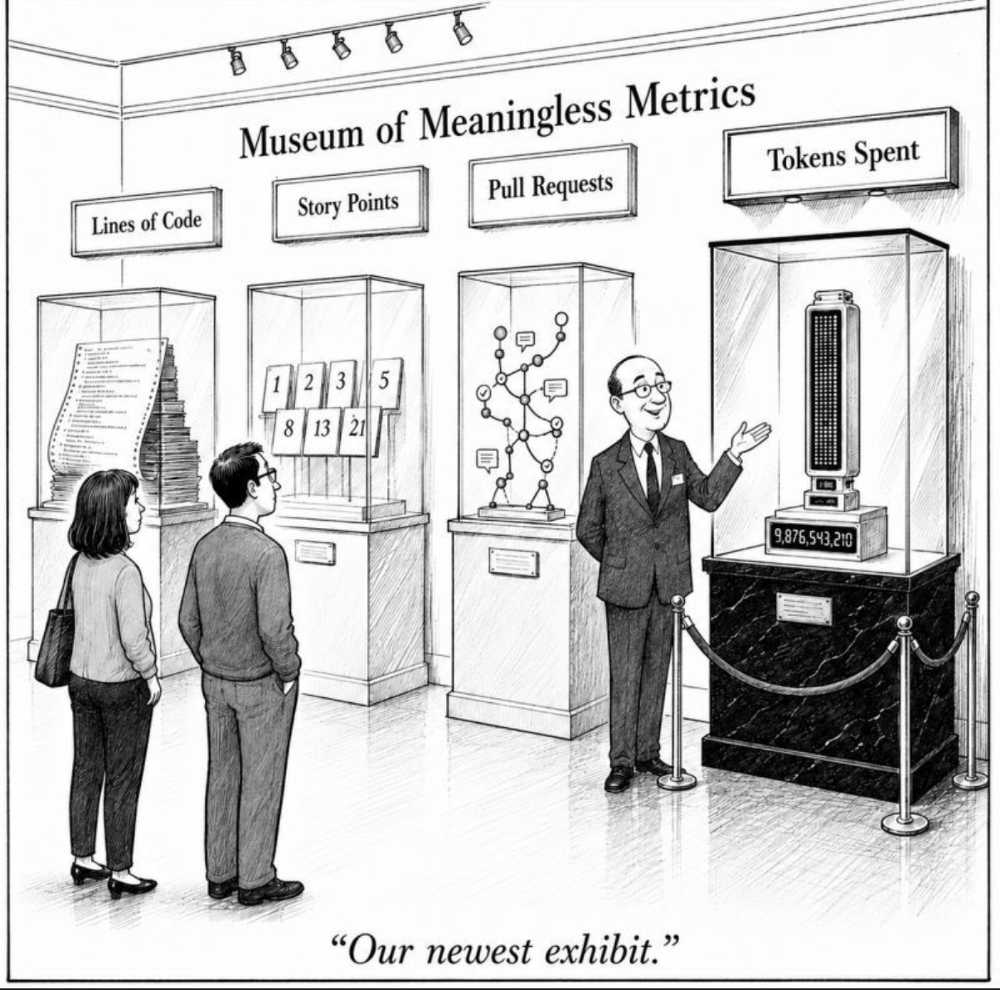

AI, software delivery, and the team
Are Traditional
Software Teams
a Thing of the Past?
How AI changes the work, the workflow,
and the shape of effective teams.
BeamRS
The app worked.
It just existed twice.
A good-looking demo is not proof of a correct system.
The thesis
The bottleneck moved
from writing code
to trusting it.
The bottleneck moved
If code took no time,
what would still stop
your team shipping?
A three-year dead end / before AI
The Three-Year Rewrite
A great deal of work
Several teams.
More than three years.
A finished application.
No viable outcome
It cost more to run than
it could ever earn.
It was scrapped.
They didn't have a speed problem.
Value, not volume
Output
isn't outcome.
Tasks closed. Pull requests merged. Code generated.
None tells you whether it was worth doing.

“Museum of Meaningless Metrics” · Gamble Blog
The rewrite, revisited
Four questions
to answer first.
Ask up front
The Three-Year Rewrite
Value: What will it earn or save?
It could never pay for itself
Economics: What will it cost to run?
It cost more to run than it earned
Thin slice: What reaches users early?
Three-plus years to a finished app
Stop rule: What result stops us?
Scrapped only after it was done
With agents, the same dead end arrives faster.
First agent workflows / RPI → QRSPI → QRSPI+
Good prompts weren't enough.
Instruction
overload
Important guidance gets lost.
Magic
words
Behavior depends on knowing what to say.
Persuasive
plans
Readable does not mean correct.
How the workflow evolved
RPI → QRSPI → QRSPI+
RPI
Research→
Plan→
Implement
Understand the code before writing it.
QRSPI
Questions→
Research→
Design→
Structure→
Plan
↵
Work tree→
Implement→
Pull request
QRSPI+
Goals→
Questions→
Research→
Design→
Phasing→
Structure→
Plan
↵
Parallelize→
Implement→
Integrate→
Test→
PR
More phases? Replan → Goals → next phase.
Simplified main paths; QRSPI+ also has a quick-fix route.
Measure the system / METR
Feeling faster isn't evidence.
Early 2025 study
19% slower
Experienced developers with AI.
They believed it made them ~20% faster.
February 2026 update
Likely faster
Raw estimates: 4–18% faster.
Too much selection bias to trust the size.
Measure validated delivery time, not how fast it feels.
Enterprise case A / 2025
The Relay
Ideator
→
Planner
→
Coder
→
Tester
Written plans and shared validation scripts
helped agents ship real features.
The Relay / the agent graded its own homework
The report said PASS.
The evidence said otherwise.
Process as infrastructure
Align. Execute. Verify.
Align
Goals, research,
design, slices.
People decide
what and why.
Execute
Task specs,
isolated work.
People set
boundaries.
Verify & learn
Review, integrate,
test, replan.
People own
the outcome.
Replace reminders with enforced rules
Make the checks unskippable.
Focused contextGive each step the information it needs.
Independent researchHide the desired answer from the researcher.
Failing tests firstRequire evidence before production code.
Human gatesApprove decisions; keep written records.
Case B / QRSPI+ / 2026
A workflow built its next release.
Scale is context. The important part is what slipped.
Case B / what the gates caught
A safeguard vanished in a merge.
Wrong tasks
merged
→
Integration
missed it
→
Acceptance
caught it
The fix restored the safeguard.
The next release added a merge-content check.
What evolved / what's next
From confidence to evidence.
The Relay
The builder grades itself.
Instructions keep growing.
A report says it passed.
QRSPI+
Independent checks, then a person.
Focused steps, measured budget.
A miss becomes a new check.
What's next
The workflow tunes itself.
Evals against a baseline.
Keep what wins. Undo the rest.
Two layers of agent review
A second review gets a fresh start.
Inside the workflow
Review during the build.
Check design fidelity.
Try a clean environment.
On the pull request
Inspect the finished change.
Challenge local assumptions.
Find what slipped through.
Agents found the issues. People owned the decisions.
BeamRS / Leptos upgrade / pull request review
Working locally wasn't enough.
Duplicated UIAttach to the server-rendered page.
Lost settingsPreserve runtime deployment settings.
Repeated requestsMake one API call per page load.
Missing processRecord integration and replanning.
BeamRS / load testing / pull request review
Success had hidden failure modes.
MemoryA setting could consume enormous memory.
False successAn incomplete response could count as passing.
CleanupWorkers could outlive a crash or cancellation.
All three fixes added regression tests.
The miss
Review still
missed a broken button.
More assurance. Not infallibility.
Close the loop
Every finding should
make the next run harder to fool.
Finding
→
Fix + reply
→
Regression
test
→
Better
process
Beyond the editor
The repository becomes a workplace.
Event or
schedule
→
Bounded
agent
→
Visible
evidence
Clarify issues. Investigate CI. Update documentation.
Illustrative uses, not claims about BeamRS automation
Governed automation
Define authority before execution.
Context
A defined trigger.
A focused task.
Permissions
Read-only by default.
Approved write actions.
Evidence
Issues, comments,
pull requests.
The hard parts of agentic engineering
Imprecise instructions.
Unpredictable execution.
English is the programming language now.
Run it like a system
The workflow is software.
Engineer it like software.
EvaluateFixed tasks, a baseline, outcome measures.
LimitBudgets for tokens, time, retries, and cost.
Hand offStructured artifacts a script can check.
Guard against ourselves
Judge the process by evidence,
not by favorites.
Confirmation bias
We keep what feels better.
We drop what failed once.
Trim the fat
Every step has a cost.
Cut what never catches anything.
GitHub's Agentic Engineering System
The same lessons,
one framework.
AES
In this talk
Stocks
Governance, knowledge, value
Checks, context, outcomes
Activities
Define, deliver, detect
Align, execute, verify & learn
Modes
Director, performer, assessor
People or agents, set by risk
Speed goes up. Escaped defects don't.
People and teams
Congratulations.
You've been promoted
to manager.
Everyone who works with agents is a manager now.
You have access to labor
Your output is
the team's output.
LaborAgents on demand, at any hour.
ProcessHow people and agents work together.
OutputWhat the whole team ships, verified.
Design the communication
Communicate enough
to keep work moving.
Handoffs
A document the next
agent can pick up.
Status
A durable record,
not a chat thread.
Escalation
Interrupt a person
only for a decision.
Audience question
Are we all becoming
PMs, or CEOs?
Careers and teams
Responsibilities change.
Accountability stays.
Product & domainIntent, constraints, value, success criteria.
EngineeringArchitecture, decomposition, integration.
DevelopersImplement, delegate, debug, inspect.
Team design
More agents need
more decision capacity.
QualityDesign evidence that can disprove success.
PlatformProvide context, workflows, permissions.
ManagementBalance agent capacity with human review.
Learning cannot be an accidental by-product
Delegate the task.
Keep the learning.
Explain. Debug. Decompose. Exercise judgment.
Audience exercise
Add agents to
your org chart.
Where do review arrows go?
The process is a product
This talk used the same loop.
IntentStart with the abstract and audience.
ResearchCheck claims against original evidence.
ReviewSeparate passes for flow and messaging.
Human correctionDecide what is true and what matters.
Measure outcomes, not activity
Did value reach users?
Measure
Earned or saved value.
Cost to run.
Validated delivery time.
Review, rework, late defects.
Don't confuse it with
Tasks closed.
Pull requests merged.
Story points.
Lines generated.
One next step
Change one part of the system.
Contributors
Write goals and a design before one agent-assisted change.
Managers
Measure review effort.
Write the value case and stop rule.
Platform leaders
Automate one repository task with bounded permissions.
Return to the opening
How would your team
have known?
That it was correct.
That it was worth building.
The answer
Traditional teams
aren't a thing of the past.
Teams that only
write code are.
Discussion
Questions?
Plausible isn't proven.
Appendix / source trail
Follow the evidence.